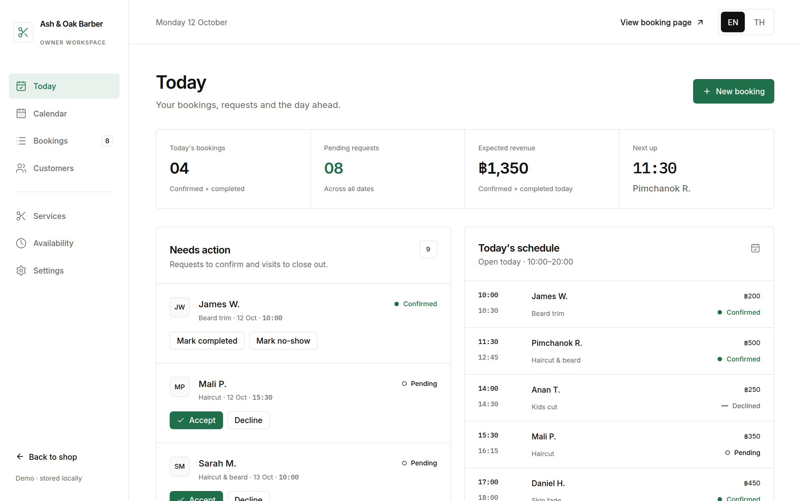
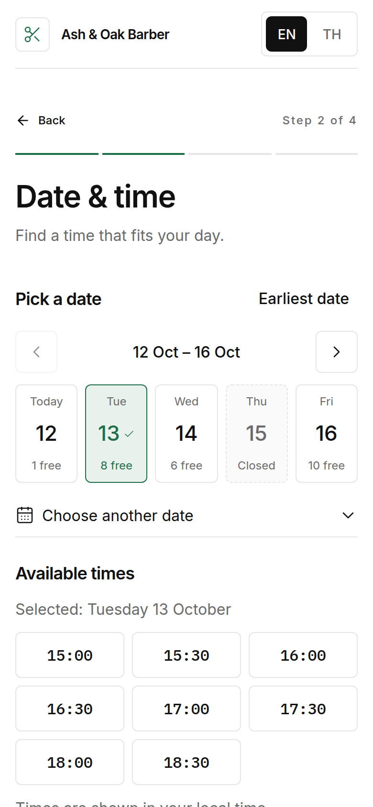
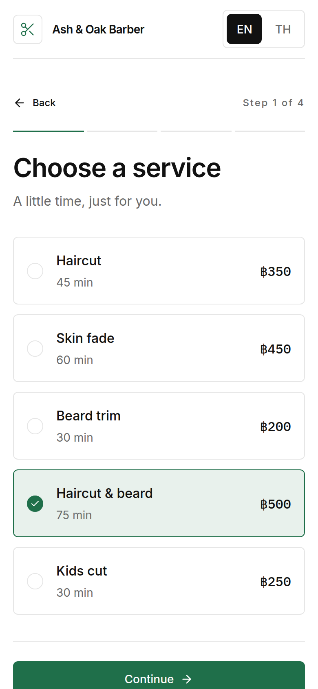
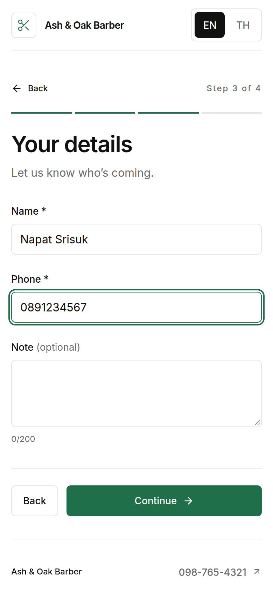
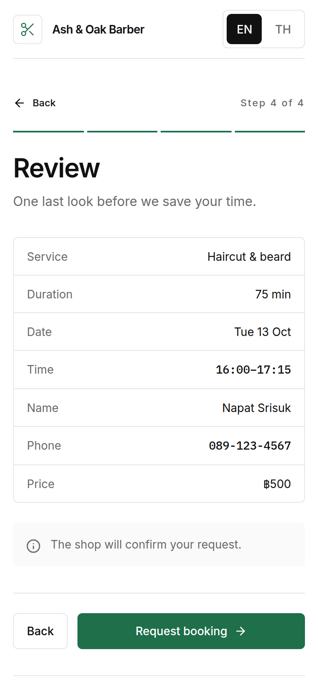
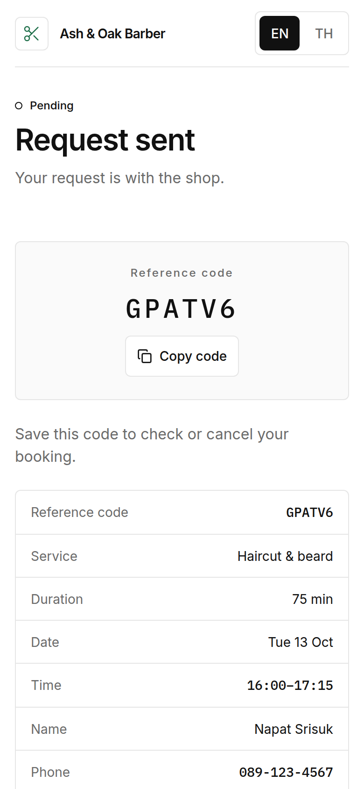
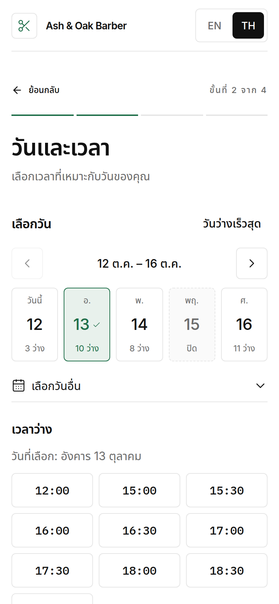
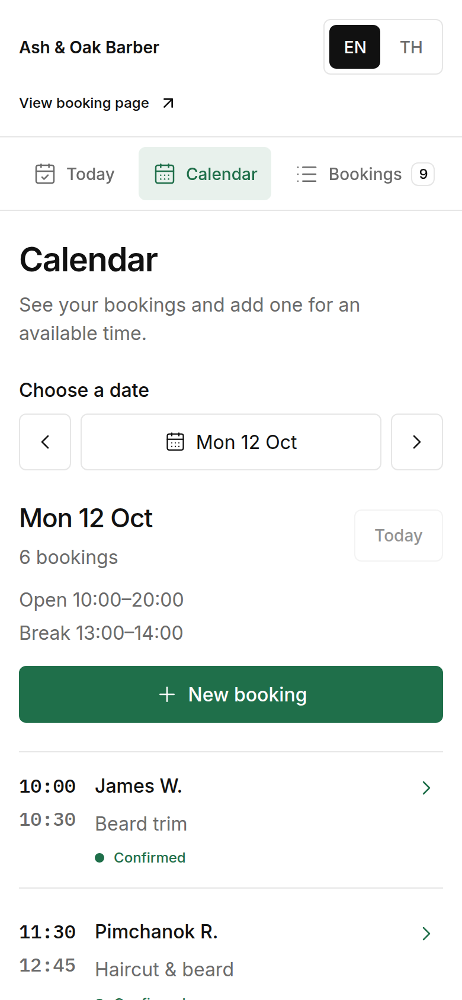
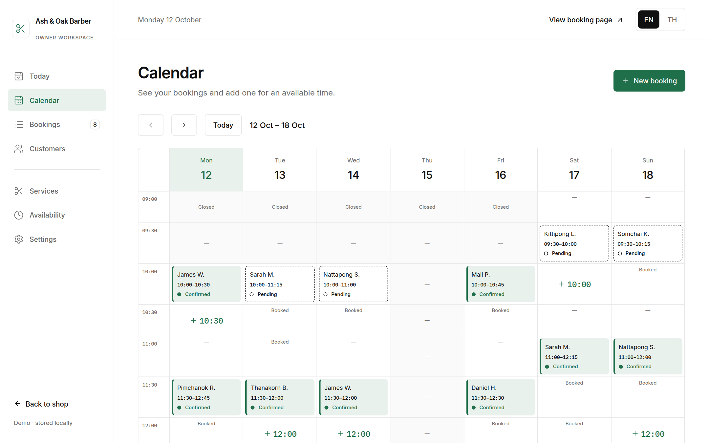

ร้านตัดผม คลินิก ร้านนวด ลูกค้าจองเวลาว่างได้เอง เจ้าของร้านเห็นทั้งวันและอนุมัติคิวได้จากที่เดียว
ชื่อร้าน บริการ และข้อมูลทั้งหมดในภาพเป็นตัวอย่างสมมติ


สถานการณ์ที่พบได้ในร้านเจ้าของคนเดียวที่รับจองผ่านแชตหรือโทรศัพท์
ภาพจำลองสถานการณ์ ไม่ใช่ข้อมูลของร้านใดร้านหนึ่ง
จองครบใน 6–7 แตะ + กรอกชื่อและเบอร์ (วัดจากเดโม: 6 แตะเมื่อจองวันนี้ 7 แตะเมื่อเลือกวันอื่น)




ผลต่อร้านจริงวัดได้หลังใช้งานจริงเท่านั้น แนะนำให้เทียบ “ก่อน–หลัง” ด้วย 3 ตัวชี้วัด: จำนวนข้อความแชตต่อ 1 การจอง · จำนวนคิวที่ซ้อนกัน · สัดส่วนคิวที่ลูกค้าไม่มา



ข้อมูลเก็บในเบราว์เซอร์ของผู้ใช้ ยังไม่มีระบบเข้าสู่ระบบ ฐานข้อมูลกลาง การแจ้งเตือนทาง SMS/LINE หรือการชำระเงิน ส่วนเหล่านี้เป็นขั้นต่อไปเมื่อนำไปใช้กับร้านจริง